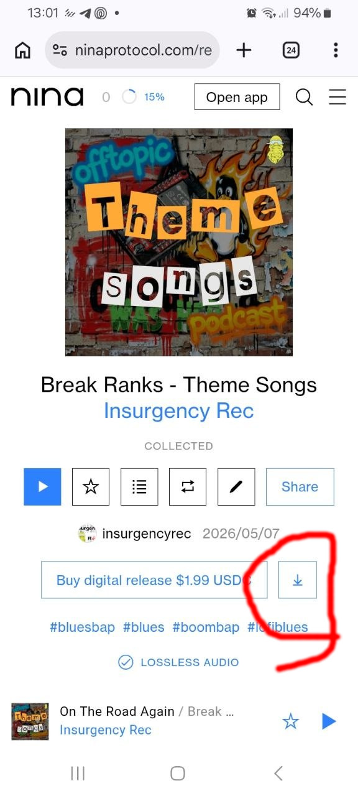

Guía de Compra de Musica en Nina
Bienvenido. A continuación encontrarás los pasos necesarios para completar el proceso correctamente.
Paso 1: Preparación
Al acceder a la página se te solicitara un email al que enviarte un código de acceso, esto creara la cuenta desde la que poder descargar el album y todos los archivos adicionales.
Paso 2: Página de Compra
Si tienes una cartera de USDC, puedes pagar con ella. Si quieres pagar con tarjeta también puedes hacerlo. NINA añade al precio del album una PEQUEÑA CANTIDAD (1$) en concepto de mantenimiento, ya que a los artistas nos llega el 100% del importe.
Paso 3: Finalización
Revisa los datos para que sean correctos, Una vez efectuado el pago puedes revisar la transacción si lo deseas. Cuando regreses a la página de nina, junto al botón de comprar tendras un nuevo botón con una flecha que te da acceso a todo el contenido para descargar.

Para cualquier duda o aclaración ponte en contacto, estare encantado de ayudarte
¡Muchísimas gracias por tu apoyo!
Si decides dar un paso más y colaborar directamente con Offtopic Podcast. Quiero tomarme un momento para agradecerte de todo corazón tu aporte; gestos como el tuyo son los que me permiten seguir encendiendo los micrófonos, investigando temas interesantes y manteniendo este proyecto vivo e independiente. Más allá del contenido de este archivo, te llevas mi agradecimiento más sincero. Espero que disfrutes de este material tanto como yo disfruto creando el podcast para ti. Si quieres seguir la conversación o darme tu feedback o cualquier otra cosa, recuerda que me encuentras en mis redes sociales y plataformas habituales.